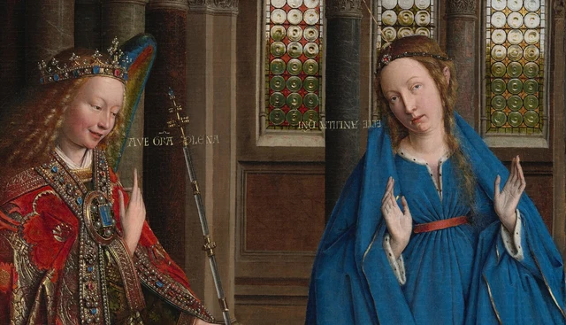
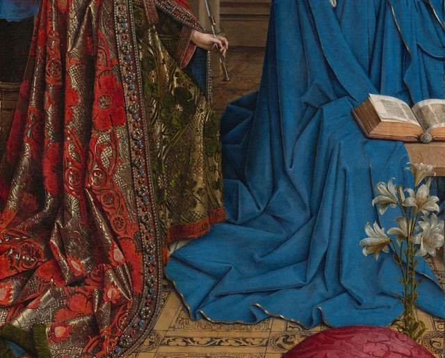
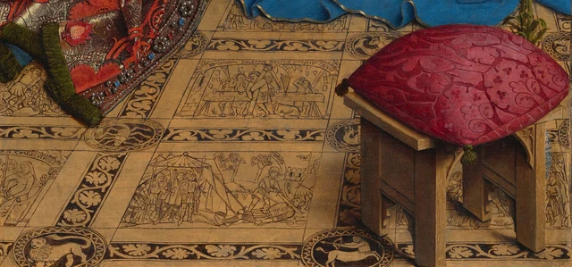

Entre les deux personnages, deux courtes lignes de lettres dorées.
À gauche, l’une part de la bouche de l’ange et se dirige vers la droite. L’autre se tient près du visage de la femme en bleu, mais elle est à l’envers. Notre regard suit la première ligne ; devant la seconde, la lecture cesse soudain d’aller de soi. Attendons un peu avant de la remettre à l’endroit. Dans une peinture qui décrit avec tant de soin chaque perle et jusqu’à l’épaisseur d’un livre, l’orientation de quelques lettres mérite la même attention.

Voici la lecture que propose cet essai : le tableau fait entrer une annonce sacrée dans un monde matériel extrêmement concret, tout en indiquant, par l’orientation différente des deux inscriptions, qu’une autre place existe dans ce monde, une place que nous n’occupons pas. Il rend les choses intensément présentes sans les disposer toutes pour faciliter notre lecture.
Le sujet vient de l’Évangile selon Luc. L’ange Gabriel annonce à Marie qu’elle donnera naissance à Jésus ; elle lui demande comment cela se fera, puis lui répond. L’Évangile situe la rencontre à Nazareth, sans décrire cette église, ces vêtements somptueux ni ce livre ouvert. Van Eyck vivait dans les Pays-Bas du XVe siècle. Il travaillait pour la cour de Bourgogne, mais aussi pour d’autres commanditaires. Les matières, les habits et l’architecture font ici entrer un récit ancien dans le monde visuel qui lui était familier. Ces ajouts déploient également la rencontre en une image de l’Incarnation et du salut. Le récit évangélique ; L’œuvre et le peintre
1 Les paroles ont été prononcées. Qui les reçoit ?
La salutation de l’ange est abrégée sur le tableau en « AVE GRA PLENA » : il salue Marie, comblée de grâce. Elle répond « ECCE ANCILLA DNI », c’est-à-dire « Voici la servante du Seigneur ». Aucune de ces phrases n’est inscrite dans un livre ou sur un phylactère. Elles demeurent suspendues entre les personnages, sans support et sans contour qui donnerait une forme à leur voix.

Selon l’interprétation religieuse traditionnelle du tableau, la réponse renversée est destinée à être lue par Dieu, au-dessus. Les inscriptions et leur interprétation Cette explication compte, car elle change la réponse à la question « qui écoute ? ». Marie répond à l’ange devant elle, mais ses paroles se tournent aussi vers Dieu. Le spectateur peut en comprendre le sens, à condition de reconnaître que son propre sens de lecture n’est pas le seul qui existe ici.
Cette différence se dessine déjà entre les visages et les mains. Gabriel s’incline légèrement vers Marie. Ses lèvres sont entrouvertes, ses joues teintées d’un rouge chaleureux. Il lève la main droite, l’index vers le haut, tandis que l’autre main tient une longue et fine baguette. Marie ouvre les deux mains, les doigts écartés ; l’une reste plus près de son corps, l’autre se lève vers le bord droit de l’image. Le geste de l’ange indique une direction précise. La réponse de Marie, elle, se déploie de chaque côté de son corps.
Son visage est tourné de notre côté, et ses yeux ne rencontrent pas de face ceux de Gabriel. Ce léger décalage laisse la rencontre ouverte. Nous voyons les deux personnages converser, mais un échange de regards réciproques ne referme pas leur dialogue sur eux seuls. L’index levé, les lettres à l’envers et la lumière qui vient de plus haut prolongent vers le haut l’espace entre eux.
Aussi pouvons-nous attendre avant de nommer son expression. Étonnement, obéissance, méditation : ces mots peuvent accompagner le regard. Ce que le tableau donne d’abord à voir, c’est une tête légèrement inclinée, des mains ouvertes et une bouche entrouverte. Sa réponse est écrite. Nous n’avons pas à demander à son seul visage de porter toute une théologie.
2 Pourquoi laisser tant de hauteur au-dessus des personnages ?
Suivons l’index de l’ange. Les personnages n’occupent que la partie basse de l’édifice. Au-dessus des chapiteaux viennent les arcades, puis d’autres colonnettes et des fenêtres, enfin le plafond de bois. La largeur du tableau dépasse à peine le tiers de sa hauteur. À mesure que l’œil s’élève, ce format étroit et allongé se fait davantage sentir.
Pour représenter simplement une rencontre entre deux personnes, toute cette hauteur ne serait pas nécessaire. Elle rend visible un autre trajet : de fins traits dorés descendent en oblique depuis le haut à gauche, traversent une longue portion d’architecture et rencontrent une colombe blanche au-dessus de Marie. La longueur des lignes et la petitesse des ailes blanches relient une entrée lointaine à une personne toute proche.

Dans l’iconographie chrétienne, la colombe renvoie à l’Esprit saint et les sept rayons à ses dons. Les lignes dorées ont ici des bords nets, comme des itinéraires que l’on pourrait suivre. Sur les colonnes et les visages, en revanche, l’ombre et la lumière passent progressivement l’une dans l’autre, nous faisant sentir la rondeur de la pierre et la douceur de la peau. Deux façons de peindre la lumière coexistent : l’une montre comment l’éclairage révèle les objets ; l’autre donne une direction à une venue dont le sens est théologique.
Le petit vitrail tout en haut demande lui aussi du temps. Un personnage rouge s’y détache sur du bleu, beaucoup plus petit que les deux figures principales. De part et d’autre subsistent des peintures murales assombries. Plus bas, derrière Marie, les fenêtres sont composées de disques de verre, entre lesquels alternent le blanc, le jaune, le vert et le rouge. Les arcs en plein cintre de la partie supérieure et les arcs brisés de la partie inférieure nous font également passer d’une forme à une autre.
Les études mettent souvent ces différences en relation avec des lectures chrétiennes de l’Ancien et du Nouveau Testament, de la Loi et de la Grâce. Cette interprétation a des fondements historiques. Elle n’oblige toutefois pas à considérer l’édifice comme un projet impossible à construire : le peintre compose un espace d’église dont certaines formes ont aussi des équivalents proches dans des bâtiments réels. Études de l’architecture et de l’iconographie
L’expérience la plus immédiate est celle d’un changement d’échelle incessant. Les visages et les mains invitent à s’approcher ; les hautes fenêtres et les peintures murales demandent de lever les yeux et de prendre du recul. Si petite et si haut placée, la figure divine tire sa force visuelle de sa position et de la distance, plutôt que d’une taille qui écraserait les personnages. L’architecture entière fait de cet « au-dessus » un chemin que notre regard doit parcourir.
3 L’éclat des étoffes, l’ampleur du bleu
En redescendant, l’œil rencontre des densités très différentes.
Le vêtement de l’ange ne laisse presque aucune grande surface libre. Les motifs rouges s’enroulent, les feuillages dorés s’entrelacent ; perles et pierres bleues ou rouges se succèdent le long des bordures. Le dessin se courbe avec les plis, disparaît par endroits dans l’ombre, puis se tourne de nouveau vers la lumière. Cette richesse ornementale ne semble jamais plaquée à plat : elle suit les mouvements du corps, avec son poids et son épaisseur.
À côté, le bleu prend ses aises. Le vêtement de Marie descend de ses épaules, se resserre à la taille, puis s’élargit sous les genoux et sur le sol. De profondes rainures bleu sombre séparent des pans plus clairs. Près du bas, un mince liseré doré suit les ondulations du tissu, tantôt relevé, tantôt étalé. L’ampleur du vêtement nous empêche de reconstituer précisément la position du bas de son corps ; elle nous fait en revanche sentir tout l’espace qu’occupe l’étoffe autour d’elle.

À gauche, le regard s’arrête d’une perle à l’autre ; à droite, il glisse sur de larges surfaces. Pourtant, ces couleurs ne forment pas deux îlots séparés. L’étoffe rouge et or retombe vers l’angle inférieur gauche, tandis que le vêtement bleu dépasse l’emplacement du corps de Marie et s’étire vers l’ange. Les personnages ne se touchent pas ; leurs habits se rapprochent déjà dans le bas du tableau. La conversation, légère en haut, repose en dessous sur l’ampleur et le poids des tissus.
Le livre ouvert se détache devant cette étendue bleue. Sa tranche d’un brun chaud laisse voir les feuillets superposés. Les pages sont fines, le livre épais ; les deux côtés du livre ouvert diffèrent légèrement, et de minuscules caractères s’alignent sur les pages. Voici, pour la lecture, un support familier. Si l’on repense aux lettres dorées suspendues devant les visages, la différence apparaît : une même peinture contient des mots fixés sur une page et une parole qui quitte la page pour entrer dans l’espace.
Les lys dessinent sur le bleu des courbes plus légères encore. Leurs pétales ne sont pas tous d’un blanc uniforme : selon leur orientation, leurs surfaces portent des ombres grises ; le cœur des fleurs et les tiges présentent d’autres nuances infimes. Dans l’iconographie mariale, le lys signifie la pureté. Mais si nous nous contentons de retenir « lys égale pureté », nous risquons de manquer la façon dont un pétale se recourbe et dont une tige traverse le bleu. Le symbole prend ici une forme précise, qui mérite d’être regardée.
La peinture à l’huile de Van Eyck donne au métal, au verre, au tissu, aux pages et à la peau des qualités tactiles distinctes. Plus ces détails résistent à l’examen, plus les lettres et les rayons dorés, sans appui physique ordinaire, deviennent singuliers. La présence très concrète du monde peint accueille cette différence. La pierre nous permet d’imaginer un contact de la main ; les paroles nous tournent vers des relations qui vont au-delà du toucher.
4 Le sol donne à la rencontre une histoire plus longue
Sous les personnages, le sol semble d’abord couvert d’un décor foisonnant. Abaissons un peu le regard : de petits corps, des armes, des bâtiments et des hommes à terre apparaissent. Ce sont des images à l’intérieur de l’image, qui répondent aux peintures murales, loin au-dessus.
Au centre, la case la plus proche de nous représente David décapitant Goliath. Celle qui la précède montre Samson renversant le temple. Reconnaître ces récits demande l’aide des textes et des études, mais on peut aisément comparer l’intensité des gestes à celle des personnages principaux. Dans le pavement, des armes se lèvent, des corps tombent, des édifices sont détruits. Au-dessus, nous voyons seulement deux mains ouvertes et un index tendu vers le haut. Les récits du pavement et leurs interprétations traditionnelles

Pourquoi tant de violence au voisinage de cette bonne nouvelle ? L’exégèse chrétienne médiévale dite « typologique » lisait dans des personnages et des événements de l’Ancien Testament des préfigurations de l’histoire du Christ. Dans cette lecture, la victoire de David renvoie à celle du Christ sur le mal ; la mort de Samson lorsqu’il renverse le temple préfigure la Passion du Christ. Il s’agit d’expliquer une manière historique de lire les Écritures à travers la foi. Dans ce cadre, l’annonce d’une naissance se tourne aussi vers la Passion et la Résurrection à venir.
Ce que nous regardons dépasse alors l’instant de la rencontre. Les histoires sur les murs appartiennent au passé ; les personnages parlent devant nous ; l’interprétation traditionnelle relie ces indices à l’avenir. Le tableau ne distribue pas tous les événements dans une suite de cases. Il confie différents temps à différentes matières : les récits anciens sur le mur lointain, le présent des corps colorés tout près de nous, les combats presque gravés sous leurs pieds. Le temps entre progressivement dans notre regard par les écarts d’espace et de facture.
Le sol ne se déploie pourtant pas comme un schéma entièrement lisible. Le bleu couvre les cases du fond ; le bas du vêtement de l’ange masque un angle à gauche ; le tabouret et son coussin rouge occupent une grande partie de l’avant droit. Ce coussin attire même davantage l’œil que beaucoup de récits. Son rouge est profond, ses quatre angles pointent vers l’extérieur, ses glands pendent au bord du bois. Si nous nous empressons de déchiffrer chaque case, le mobilier et les étoffes risquent de nous apparaître comme des obstacles.
Je préfère voir dans ces recouvrements une condition même de l’image. Les récits appartiennent au monde où vivent les personnages ; ils doivent donc aussi y partager leur place avec des corps et des objets. Le vêtement de Marie la rend intensément présente tout en soustrayant à notre vue une partie des histoires anciennes. Savoir qu’une image contient beaucoup de significations n’exige pas qu’elles soient toutes exposées en même temps, dans leur intégralité, au spectateur.
5 La réponse reste à l’envers pour nous
Revenons aux deux inscriptions. Après avoir parcouru l’église, nous retrouvons ailleurs la difficulté rencontrée au début : le petit vitrail demande de chercher en hauteur ; les récits du sol nous font baisser les yeux ; les lettres du livre et les motifs cachés par les vêtements gardent chacun leur distance. Le tableau nous donne beaucoup à voir, tout en déplaçant constamment la position depuis laquelle nous regardons.
Le tableau a lui aussi une longue histoire. Nous pouvons décrire comment ces relations agissent ensemble. Mais l’œuvre qui nous est parvenue ne suffit pas à reconstituer toutes ses conditions de vision d’origine. Elle appartenait peut-être à un ensemble plus vaste ; sa commande et sa provenance ancienne restent en partie incertaines. Elle a ensuite été transposée du bois sur la toile. Nous avons devant nous une œuvre arrivée jusqu’à aujourd’hui au terme d’un long parcours, plutôt qu’une fenêtre demeurée intacte depuis le XVe siècle. Histoire de l’œuvre et recherches
Cela n’enlève rien à la précision des rapports visibles. L’ange parle, Marie répond ; les étoffes se répandent sur le sol, la lumière arrive d’en haut ; des histoires anciennes entourent un événement en train de se produire. Il n’est pas nécessaire d’avoir résolu chaque scène du pavement et chaque question de provenance pour voir comment ces relations se soutiennent.
À mes yeux, la présence convaincante du monde de Van Eyck ne se confond pas avec le sentiment, pour le spectateur, de tout maîtriser. Plus nous sentons la matière des pages, des perles et du tissu, mieux nous percevons que la rencontre possède une autre orientation. Le sacré se rend visible à travers les formes concrètes du monde matériel. Certaines des relations qui le constituent continuent pourtant à se prolonger au-delà de la place où nous nous tenons.
Regardons encore la réponse renversée de Marie. Nous savons maintenant ce qu’elle dit ; nous pouvons la traduire aisément dans notre langue. Mais lorsque nous revenons au tableau, laissons-lui son orientation première. Une fois la phrase comprise, l’image nous donne encore à voir vers qui elle se tourne.
Lecture facultative Avec SAE, que regarder une fois le sens compris ?
La lecture qui précède se suffit à elle-même. L’esthétique SAE, Self-as-an-End, permet ici d’ouvrir deux expériences du regard : comment nous lisons le sens d’une phrase, puis comment sa forme concrète peut encore nous retenir lorsque ce sens est compris. Présentation générale de l’esthétique SAE
Prenons d’abord les lettres dorées à l’envers. Même après en avoir appris le sens en français, nous les retrouvons renversées, fines comme des fils, dans ce petit espace entre un visage et une fenêtre. L’explication n’a effacé ni leur orientation, ni leurs intervalles, ni leur couleur. La « beauté de la perception », dans SAE, s’intéresse précisément à la manière dont quelque chose se manifeste : même lorsque nous cessons momentanément de nous en servir pour identifier ou accomplir une tâche, cela continue à se montrer ainsi. La beauté de la perception Devant ce tableau, mettons un instant l’explication de côté et regardons comment ces lettres peuvent être assez légères pour presque disparaître, tout en suffisant à interrompre la fluidité de la lecture. La théorie nous aide à préserver cette expérience, à ne pas refermer trop vite le regard sous prétexte que « le sens est compris ».
Observons ensuite nos habitudes de lecture. Une personne familière des lettres latines disposées horizontalement peut s’attendre, avant même d’avoir déchiffré chaque caractère, à lire la seconde ligne aussi facilement que la première. La réponse renversée suspend cette attente. Nos expériences antérieures ne sont pas peintes sur le tableau ; elles ont pourtant déjà préparé, de notre côté, une lecture à venir. Lorsque nous apprenons le sens religieux de l’orientation, l’attente peut se modifier : en retrouvant la même ligne, nous chercherons peut-être d’abord vers où elle se dirige.
On peut poursuivre cette observation avec la « beauté de la cognition » de SAE. Elle examine comment les expériences gardées en mémoire se tendent vers ce qui n’est pas encore arrivé et comment, lorsqu’une attente rencontre un obstacle, nous faisons de nouveau appel à ces expériences. La beauté de la cognition Ici, la question porte sur notre manière de regarder. Qu’est-ce qui fait que des lettres nous apparaissent d’emblée comme une phrase à lire ? Pourquoi les mêmes traits font-ils naître une autre attente à la deuxième rencontre ? Chacun possède sa propre expérience de l’écrit ; chacun peut donc éprouver ce changement en regardant réellement le tableau.
Pour moi, ces deux voies se rejoignent en un point très concret. La traduction ouvre le contenu des paroles, tandis que les lettres peintes conservent une rencontre orientée. L’explication peut enrichir l’expérience des yeux ; les yeux peuvent, à leur tour, permettre à l’explication de découvrir encore quelque chose. Lorsque nous reviendrons à ces quelques lettres, elles mériteront que nous restions un peu plus longtemps.
À propos des images et des sources
Les descriptions visuelles reposent sur l’image originale de 1553 × 4096 pixels fournie par la National Gallery of Art et sur l’observation de quatre détails. La vue complète conserve le fichier téléchargé sans modification ; les figures 2 à 5 sont de simples recadrages, sans correction des couleurs, ajout pictural, restauration ni contenu généré. Les couleurs et l’échelle d’une reproduction numérique dépendent des conditions d’affichage.
Les images ouvertes du musée relèvent de sa politique CC0. Cette licence ne couvre pas les textes modernes de recherche. L’essai repose principalement sur l’observation et l’analyse indépendantes du tableau ; les faits et les interprétations traditionnelles renvoient à la notice de l’œuvre, au texte biblique et au catalogue scientifique. Les lectures proposées ici n’impliquent pas l’approbation du musée. Le catalogue de 1986 sert à vérifier l’iconographie et l’histoire des recherches ; son constat de conservation ancien n’est pas utilisé pour décrire l’état actuel du tableau. Les études techniques ultérieures dont le texte intégral n’a pas été obtenu figurent seulement parmi les lectures complémentaires : elles n’ont pas servi à compléter le récit des procédés de fabrication. Voir les références et les sources et licences des images.